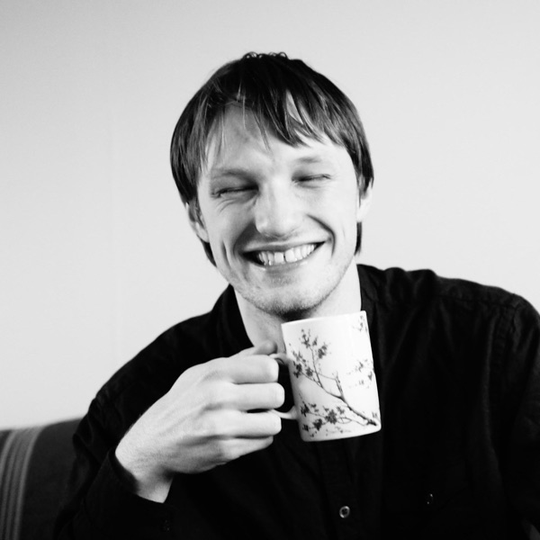
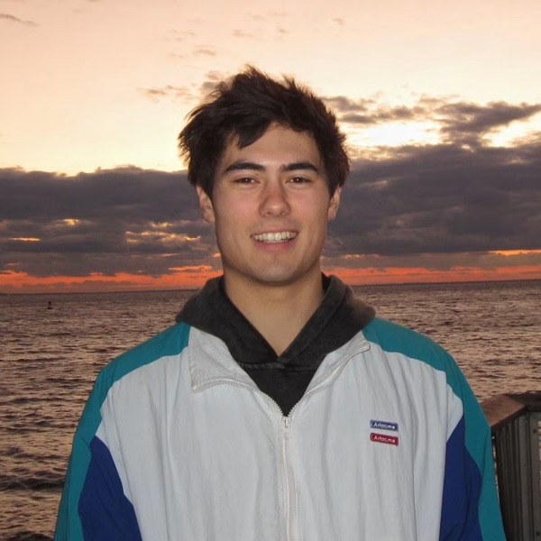

目标
该研究组数十年来一直推动跨学科合作。会议汇集了有关主动推断与自由能原理的实证数据及分析、仿真研究和数学研究。
此页面由机器翻译成中文。 查看英文原版。
面向神经科学、数学、机器学习、心理学、哲学、医学和生物学领域的研究人员和学习者。
每周举办关于主动推断和自由能原理的研究研讨会。
领导: Daniel Friedman
在本页
理论神经生物学组（TNB）由 Karl Friston 教授创立，通过跨学科报告和讨论推动主动推断与自由能原理的研究。
该研究组数十年来一直推动跨学科合作。会议汇集了有关主动推断与自由能原理的实证数据及分析、仿真研究和数学研究。
会议每周二英国时间下午 2:30 在 Zoom 上举行，持续约两小时。通常包括 40 分钟的报告、40 分钟的问答，以及 40 分钟与 Friston 教授的讨论和反馈。
如需加入邮件列表并获取 Zoom 链接，请向研究组发送电子邮件并附上简短的自我介绍，说明您的工作内容以及与该领域的联系。研究组欢迎各个学科的参与者作出贡献。
TNB 的 YouTube 播放列表按研究领域整理往期会议。

Samuel 是 Institute of Neuroinformatics 的硕士生，该所是 ETH Zürich 与 University of Zürich 的联合研究所。他在 Aarhus University 完成认知科学本科学业，并在那里开始为认知建模开发 Active Inference 模型的 Julia 实现。
他的兴趣在于将人类行为的计算建模与脑成像相结合，研究迷幻药如何在算法层面调节层级推断、认知灵活性与信念更新，以及由此产生的计算如何在脑网络中实现。他也是航空爱好者，喜欢思考物理学与心灵哲学中的基本问题，也喜欢徒步或骑自行车探索瑞士的山地。

Peter 的研究聚焦于多尺度社会互动的计算认知建模，尤其关注 Active Inference 与预测加工视角。他在 Aarhus University 的 Interacting Minds Centre 跟随 Chris Mathys 完成博士学业，目前正开始在 ETH Zürich 的 Translational Neuromodeling Unit 与 Klaas Stephan 开展博士后研究。
他为一般认知建模、Hierarchical Gaussian Filter（层次高斯滤波器）以及基于 POMDPs 的 Active Inference 开发 Julia 软件；此外，他还研究意识、双人舞中的共同行动，以及中国哲学与预测加工。

Robert 在 University of Sussex 及 Sussex Centre for Consciousness Science 的 Anil Seth 实验室担任 ERC 博士后研究员。他的研究聚焦于涌现的形式化概念与计算神经现象学，运用融合预测编码与 Active Inference 的形式化方法，对体验的现象性质进行建模并加以实验验证，旨在逐步建立一种名为 Phenomenomics 的新方法论范式，以刻画人类以及最终所有其他观察者的内在世界，其中包括利用大规模数据集上的 AI/ML 方法。
在加入 Sussex 之前，他曾在 NYU 跟随 David Chalmers 担任 Fulbright 博士后研究员，在 Georg Northoff 实验室担任 Tatiana Foundation 博士后研究员，并曾在 Giulio Tononi 实验室从事位于哲学、神经科学与计算建模交叉领域的意识研究。他同时还是 Wolfram Institute 的关联研究员。

Will 是 Sussex Centre for Consciousness Science 的博士生，导师是 Anil Seth 和 Chris Buckley。他研究人类受试者的知觉现象学如何为皮层加工的预测编码模型提供约束和启发；这些模型涉及世界如何向我们呈现的算法基础。
他也对运用预测加工方法研究意识的元问题感兴趣，试图理解关于意识体验和感质的直觉，可能如何在某些生成模型层级结构中自然产生。他喜欢冲浪、室内植物和禅。

Jonathan 在 ETH Zürich（苏黎世联邦理工学院）和 University of Zürich（苏黎世大学）攻读神经系统与计算硕士学位，并在那里使用 Julia 开发认知建模软件。他关注如何利用计算工具理解精神障碍，以及这些工具在临床实践中可能发挥怎样的作用。
学习之外，他热衷于阅读历史和哲学，也喜欢户外活动。
Dominik 在丹麦奥胡斯大学学习认知科学，正在苏黎世的转化神经建模研究组（Translational Neuromodeling Unit）完成一篇计算精神病学方向的论文。他计划在最后一个学期前往东京早稻田大学，研究如何用数学方法描述精神疾病的神经机制和计算机制。
他的研究兴趣包括结合神经影像与计算建模来研究精神病理学。课余时间，他喜欢心灵哲学、科幻作品、惊悚作品和有挑战性的电子游戏。
该研究组正在整理主动推断资源集，内容包括入门材料、研究论文和教程。研究组还计划与其他社群共同举办研究研讨会，促进跨学科合作。
关键表面
每周二英国时间下午 2:30，在 Zoom 上举行。
按研究领域浏览往期报告。
相关资源
Audience: Newcomer
Primary public community channel for conversation, coordination, and newcomer orientation.
Audience: Newcomer
Public video channel for seminars, streams, educational sessions, and community recordings.